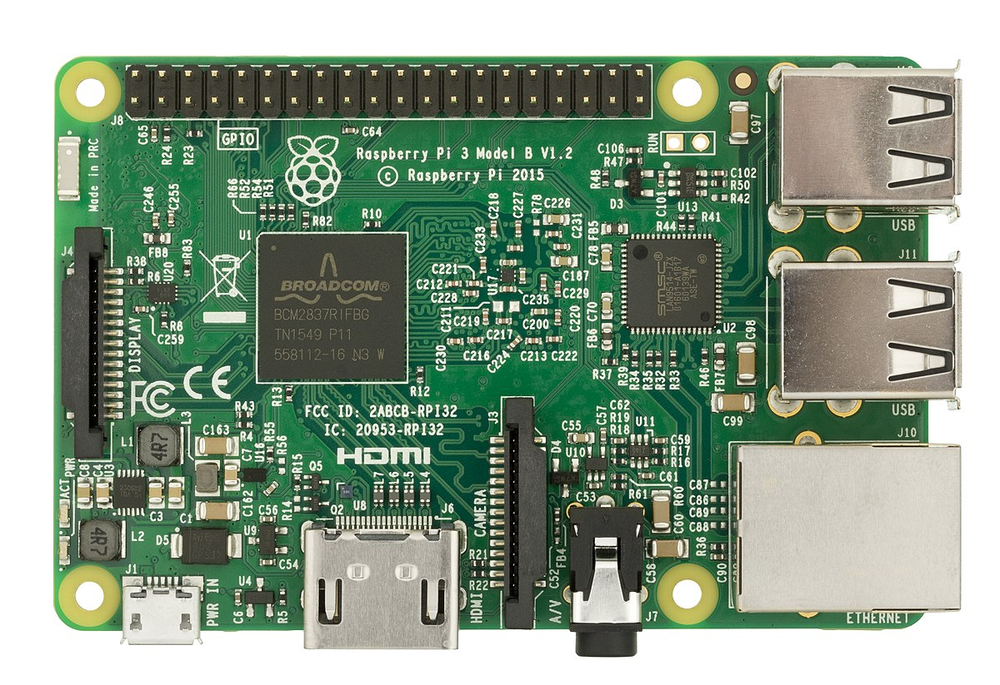

2010
China's Tianhe supercomputers are operational
With a peak speed of over a petaflop (one thousand trillion calculations per second), the Tianhe 1 (translation: Milky Way 1) is developed by the Chinese National University of Defense Technology using Intel Xeon processors combined with AMD graphic processing units (GPUs). The upgraded and faster Tianhe-1A used Intel Xeon CPUs as well, but switched to nVidia's Tesla GPUs and added more than 2,000 Fei-Tang (SPARC-based) processors. The machines were used by the Chinese Academy of Sciences to run massive solar energy simulations, as well as some of the most complex molecular studies ever undertaken.
2011
Passing of Steve Jobs
Few individuals are as closely tied to the image of their company as co-founder Steve Jobs is to Apple. His vision imbued products during both his tenures at the company. His passing on October 11th, 2011, was met with widespread sadness. Many individuals left flowers and other tributes at Apple stores around the world, and social networks were filled with remembrances from friends and admirers. As many noted at the time, Jobs had transformed six different industries: music, animated movies, personal computers, telephones, tablet computing and digital publishing.
2012
Raspberry Pi, a credit-card-size single board computer, is released as a tool
 Conceived in the UK by the Raspberry Pi Foundation, this credit card-sized computer features ease of use and simplicity making it highly popular with students and hobbyists. In October 2013, the one millionth Raspberry Pi was shipped. Only one month later, another one million Raspberry Pis were delivered. The Pi weighed only 45 grams and initially sold for only $25-$35 U.S. Dollars.
2014
HTML 5 announced
 HTML 5 is announced as the successor to HTML 4, which had become the standard for web markup languages in 1997. Markup languages describe how web pages will look and function. Work on HTML 5 had begun in 2004 under the auspices of the Web Hypertext Application Technology Working Group. It was simplified compared to its predecessors and was intended to be human-readable. HLTML 5 also offered a number of improvements for multimedia, such as simplifying the embedding of content such as streaming video and games into web pages.
HTML 5 is announced as the successor to HTML 4, which had become the standard for web markup languages in 1997. Markup languages describe how web pages will look and function. Work on HTML 5 had begun in 2004 under the auspices of the Web Hypertext Application Technology Working Group. It was simplified compared to its predecessors and was intended to be human-readable. HLTML 5 also offered a number of improvements for multimedia, such as simplifying the embedding of content such as streaming video and games into web pages.
2015
Apple Watch
 Building a computer into the watch form factor has been attempted many times but the release of the Apple Watch leads to a new level of excitement. Incorporating a version of Apple's iOS operating system, as well as sensors for environmental and health monitoring, the Apple Watch was designed to be incorporated into the Apple environment with compatibility with iPhones and Mac Books. Almost a million units were ordered on the day of release. The Watch was received with great enthusiasm, but critics took issue with the somewhat limited battery life and high price.
Building a computer into the watch form factor has been attempted many times but the release of the Apple Watch leads to a new level of excitement. Incorporating a version of Apple's iOS operating system, as well as sensors for environmental and health monitoring, the Apple Watch was designed to be incorporated into the Apple environment with compatibility with iPhones and Mac Books. Almost a million units were ordered on the day of release. The Watch was received with great enthusiasm, but critics took issue with the somewhat limited battery life and high price.